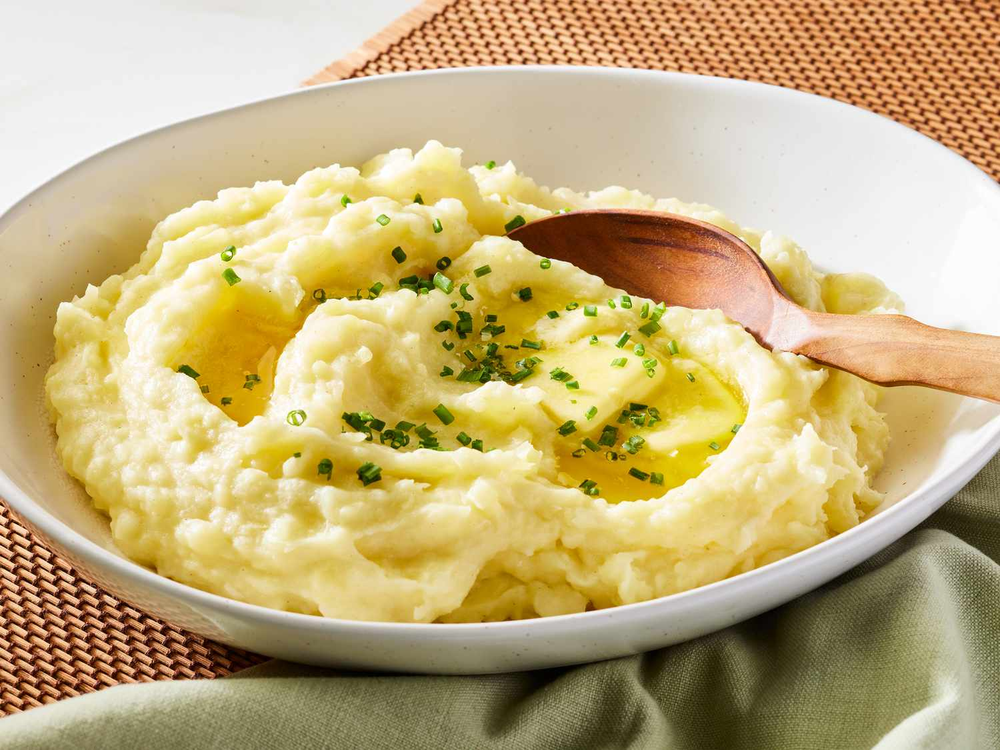

Odin Recipes
Home
Mashed Patatoes

Description:
These creamy homemade mashed potatoes are the ultimate comfort food side dish. With a velvety texture and rich buttery flavor, they're simple to make but impressive enough for any occasion. The secret to perfect mashed potatoes lies in the right potato variety, proper cooking technique, and quality finishing ingredients.
Ingredients:
For the mashed potatoes
- 4 pounds (about 8 medium) Yukon Gold or Russet potatoes
- 1 tablespoon salt (for boiling water)
- 1 cup (2 sticks) unsalted butter, cut into pieces
- 1 cup whole milk or heavy cream (warmed)
- 1/2 cup sour cream
- 1 teaspoon salt (or to taste)
- 1/2 teaspoon white pepper
- 1/4 teaspoon garlic powder (optional)
For garnish
- 2 tablespoons fresh chives, finely chopped
- Additional 2 tablespoons butter for topping
- Freshly ground black pepper
Steps:
- Prepare the potatoes: Peel the potatoes and cut them into 1-inch cubes of similar size to ensure even cooking. As you cut them, place the pieces in a bowl of cold water to prevent browning.
- Boil the potatoes: Drain the potatoes and transfer to a large pot. Cover with cold water by 1 inch and add 1 tablespoon of salt. Bring to a boil over high heat, then reduce to a simmer. Cook until the potatoes are very tender when pierced with a fork, about 15-20 minutes.
- Drain thoroughly: Drain the potatoes in a colander and return them to the hot pot. Shake the pot gently over low heat for about 1 minute to evaporate any remaining moisture – this helps create fluffier mashed potatoes.
- Begin mashing: While the potatoes are still hot, begin mashing them using a potato masher or ricer. For ultra-smooth potatoes, use a food mill or ricer; for more rustic potatoes with some texture, use a traditional masher.
- Add the butter: Add the butter pieces to the hot potatoes and continue mashing until the butter is fully melted and incorporated.
- Add dairy: Slowly pour in the warm milk or cream while gently stirring with a wooden spoon or rubber spatula. Then fold in the sour cream until just combined. Be careful not to overmix, as this can make the potatoes gluey.
- Season: Add salt, white pepper, and garlic powder (if using). Taste and adjust seasonings as needed.
- Serve: Transfer to a warm serving bowl, create a small well in the center, and add the additional butter. Sprinkle with fresh chives and black pepper. Serve immediately while hot.